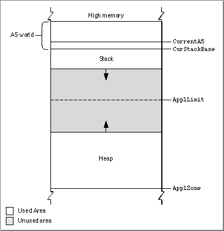
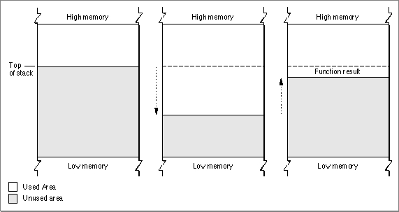
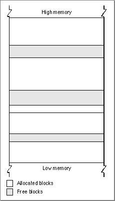
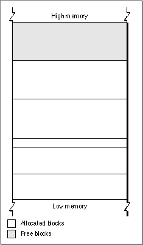
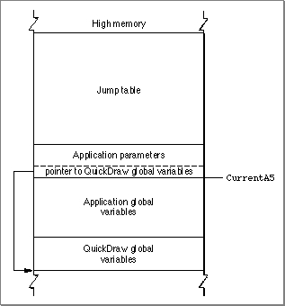

Application Partitions
When your application is launched, the Operating System allocates for it a partition of memory called its application partition. That partition contains required segments of the application's code as well as other data associated with the application. Figure 2-2 illustrates the general organization of an application partition.Figure 2-2 Organization of an application partition

Your application partition is divided into three major parts:
The heap is located at the low-memory end of your application partition and always expands (when necessary) toward high memory. The A5 world is located at the high-memory end of your application partition and is of fixed size. The stack begins at the high-memory end of the A5 world and expands downward, toward the top of the heap.
- the application stack
- the application heap
- the application global variables and A5 world
As you can see in Figure 2-2, there is usually an unused area of memory between the stack and the heap. This unused area provides space for the stack to grow without encroaching upon the space assigned to the application heap. In some cases, however, the stack might grow into space reserved for the application heap. If this happens, it is very likely that data in the heap will become corrupted.
The
ApplLimitglobal variable marks the upper limit to which your heap can grow. If you call theMaxApplZoneprocedure at the beginning of your program, the heap immediately extends all the way up to this limit. If you were to use all of the heap's free space, the Memory Manager would not allow you to allocate additional blocks aboveApplLimit. If you do not callMaxApplZone, the heap grows towardApplLimitwhenever the Memory Manager finds that there is not enough memory in the heap to fill a request. However, once the heap grows up toApplLimit, it can grow no further. Thus, whether you maximize your application heap or not, you can use only the space between the bottom of the heap andApplLimit.Unlike the heap, the stack is not bounded by
ApplLimit. If your application uses heavily nested procedures with many local variables or uses extensive recursion, the stack could grow downward beyondApplLimit. Because you do not use Memory Manager routines to allocate memory on the stack, the Memory Manager cannot stop your stack from growing beyondApplLimitand possibly encroaching upon space reserved for the heap. However, an Operating System task checks approximately 60 times each second to see if the stack has moved into the heap. If it has, the task, known as the "stack sniffer," generates a system error.The Application Stack
The stack is an area of memory in your application partition that can grow or shrink at one end while the other end remains fixed. This means that space on the stack is always allocated and released in LIFO (last-in, first-out) order. The last item allocated is always the first to be released. It also means that the allocated area of the stack is always contiguous. Space is released only at the top of the stack, never in the middle, so there can never be any unallocated "holes" in the stack.By convention, the stack grows from high-memory addresses toward low-memory addresses. The end of the stack that grows or shrinks is usually referred to as the "top" of the stack, even though it's actually at the lower end of memory occupied by the stack.
Because of its LIFO nature, the stack is especially useful for memory allocation connected with the execution of functions or procedures. When your application calls a routine, space is automatically allocated on the stack for a stack frame. A stack frame contains the routine's parameters, local variables, and return address. Figure 2-3 illustrates how the stack expands and shrinks during a function call. The leftmost diagram shows the stack just before the function is called. The middle diagram shows the stack expanded to hold the stack frame. Once the function is executed, the local variables and function parameters are popped off the stack. If the function is a Pascal function, all that remains is the previous stack with the function result on top.
Figure 2-3 The application stack

- Note
- Dynamic memory allocation on the stack is usually handled automatically if you are using a high-level development language such as Pascal. The compiler generates the code that creates and deletes stack frames for each function or procedure call.
The Application Heap
An application heap is the area of memory in your application partition in which space is dynamically allocated and released on demand. The heap begins at the low-memory end of your application partition and extends upward in memory. The heap contains virtually all items that are not allocated on the stack. For instance, your application heap contains the application's code segments and resources that are currently loaded into memory. The heap also contains other dynamically allocated items such as window records, dialog records, document data, and so forth.You allocate space within your application's heap by making calls to the Memory Manager, either directly (for instance, using the
NewHandlefunction) or indirectly (for instance, using a routine such as the Window Manager'sNewWindow, which in turn calls Memory Manager routines). Space in the heap is allocated in blocks, which can be of any size needed for a particular object.The Memory Manager does all the necessary housekeeping to keep track of blocks in the heap as they are allocated and released. Because these operations can occur in any order, the heap doesn't usually grow and shrink in an orderly way, as the stack does. Instead, after your application has been running for a while, the heap can tend to become fragmented into a patchwork of allocated and free blocks, as shown in Figure 2-4. This fragmentation is known as heap fragmentation.

One result of heap fragmentation is that the Memory Manager might not be able to satisfy your application's request to allocate a block of a particular size. Even though there is enough free space available, the space is broken up into blocks smaller than the requested size. When this happens, the Memory Manager tries to create the needed space by moving allocated blocks together, thus collecting the free space in a single larger block. This operation is known as heap compaction. Figure 2-5 shows the results of compacting the fragmented heap shown in Figure 2-4.

Heap fragmentation is generally not a problem as long as the blocks of memory you allocate are free to move during heap compaction. There are, however, two situations in which a block is not free to move: when it is a nonrelocatable block, and when it is a relocatable block that is temporarily locked in place. To minimize heap fragmentation, you should use nonrelocatable blocks sparingly, and you should lock relocatable blocks only when absolutely necessary. See "Memory Blocks" starting on page 38 for a description of relocatable and nonrelocatable blocks.
The Application Global Variables and A5 World
Your application's global variables are stored in an area of memory near the top of your application partition known as the application A5 world. The A5 world contains four kinds of data:Each of these items is of fixed size, although the sizes of the global variables and of the jump table vary from application to application. Figure 2-6 shows the standard organization of the A5 world.
- application global variables
- application QuickDraw global variables
- application parameters
- the application's jump table
Figure 2-6 Organization of an application's A5 world

The system global variable
- Note
- An application's global variables may appear either above or below the QuickDraw global variables. The relative locations of these two items are determined by your development system's linker. In addition, part of the jump table might appear below the boundary pointed to by
CurrentA5.CurrentA5points to the boundary between the current application's global variables and its application parameters. For this reason, the application's global variables are found as negative offsets from the value ofCurrentA5. This boundary is important because the Operating System uses it to access the following information from your application: its global variables, its QuickDraw global variables, the application parameters, and the jump table. This information is known collectively as the A5 world because the Operating System uses the microprocessor's A5 register to point to that boundary.Your application's QuickDraw global variables contain information about its drawing environment. For example, among these variables is a pointer to the current graphics port.
Your application's jump table contains an entry for each of your application's routines that is called by code in another segment. The Segment Manager uses the jump table to determine the address of any externally referenced routines called by a code segment. For more information on jump tables, see the chapter "Segment Manager" in Inside Macintosh: Processes.
The application parameters are 32 bytes of memory located above the application global variables; they're reserved for use by the Operating System. The first long word of those parameters is a pointer to your application's QuickDraw global variables.